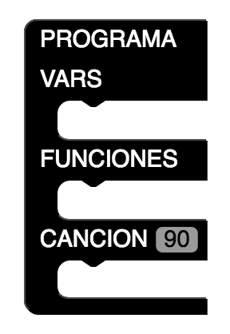
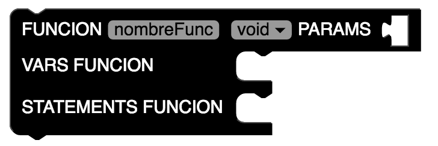
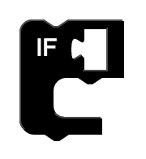
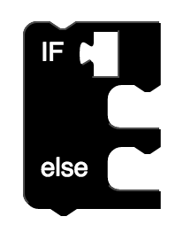

Guía para utilizar el lenguaje Din.
Din es un lenguaje para aprender programación orientado a la de música. Con este lenguaje se busca enseñar programación de una manera divertida y original, dandole vida al código por medio de melodías generadas en el flujo del código.
El bloque principal se encuentra ubicado en la seccion de Inicio.
Este bloque es indispensable para que el programa funcione correctamente pues cuenta con los 3 modulos principales del lenguaje: VARS FUNCIONES y CANCION.
En el primer modulo de este bloque (VARS) se encuentra el segmento en donde se declaran variables globales.
Para declarar una variable se debe accesar a la categoria Variable ubicada en el lado derecho de la pantalla y escoger el bloque correspondiente a la declaracion de variables.
Se debe elegir el nombre de la variable y el tipo de la misma.
Para declarar una variable que guarde una lista se debe escoger el bloque correspondiente y elegir su nombre y su tipo.
El modulo de FUNCIONES es el responsible de la declaracion de las funciones del programa.
Para declarar una function se debe ir a la categoria Inicio y escoger el bloque correspondiente.
Se debe elegir el nombre de la function, su tipo y se deben agregar los parametros correspondientes.
Para agregar un parametro se debe ir a la sección de Simples y escoger el bloque correspondiente.
Se debe escoger el tipo y el nombre del parametro de la function, se pueden agregar varios parametros a una sola function.
Se pueden declarar variables para la function en su sección de VARS FUNCION de la misma manera que se declaran las variables globales.
La sección de STATEMENTS FUNCION es en donde se declaran todos los estatutos que forman parte del codigo de la función.
En esta sección se pueden manipular las variables pero no pueden ser declaradas.
Existen 4 distintos tipos de estatutos lógicos.
El primero es el IF que se utiliza seleccionando el bloque correspondiente.
Dentro de la primera casilla del If se debe poner una expression que valida si el mismo es cierto o no.
Las expresiones se pueden contruir utilizando los bloques de las categoria Expresiones.
El Segundo tipo de estatuto lógico es el IF ELSE que es un variante del IF solo que con una alternativa dictaminada por el else. Para utilizarlo se debe elegir el bloque correspondiente.

El tercer tipo de estatuto lógico es el FOR. El For se construye a base de 3 expresiones que deben formar una instruccion con la siguiente sintaxis: (i=0 i
Es decir, una asignacion, una condicion y una expression de increment o decremento.
El ultimo tipo de estatuto lógico es el WHILE en el que al igual que el IF una expression determina si se sigue iterando o no.
En la categoria de Simples se pueden encontrar más expresiones y estatutos para la construcción del codigo que se busca generar dentro de la funcion.
El tercer modulo del bloque principal (PROGRAMA) es el modulo CANCION.
Dicho modulo viene con un recuadro que indica el tempo en el que se va a reproducir la melodía. Se recomienda no cambiarlo.
Para poder crear las variables y los estatutos correspondientes al modulo CANCION se debe agregar un nuevo bloque ubicado en la sección de Inicio
Dicho bloque habilitara los modulos de VARS y STATEMENTS para la function CANCION.
La manera de declarar variables en la seccion de VARS y utilizer estatutos en la sección de STATEMENTS es identica a la descrita para el bloque FUNCION.
Ejemplo de un programa sencillo: